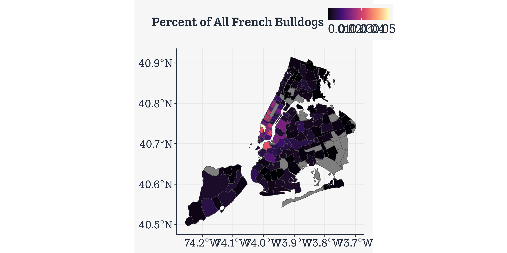
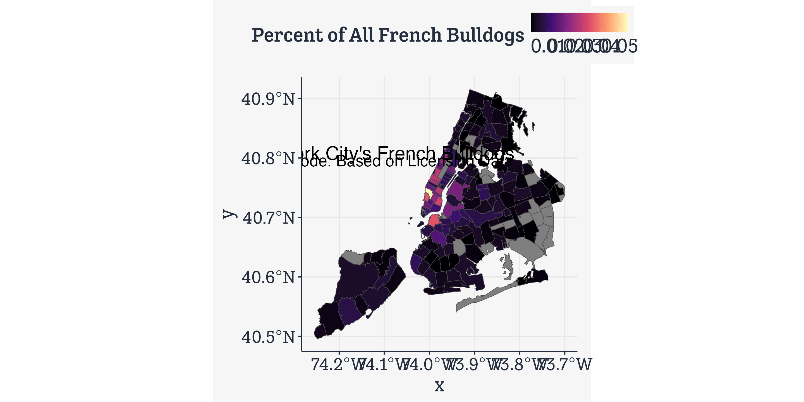
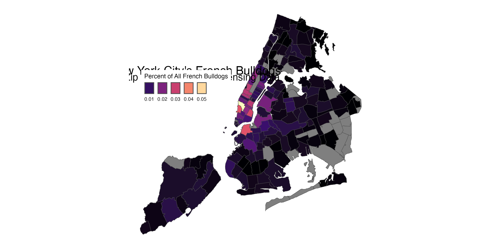
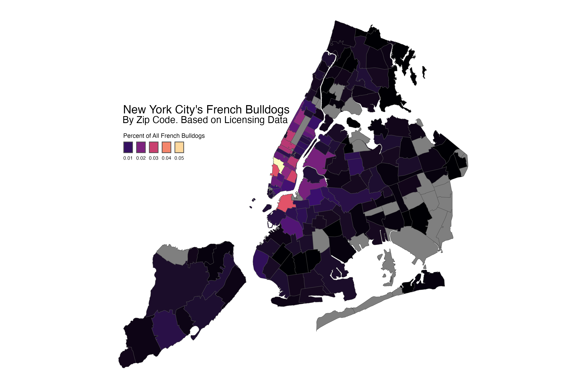
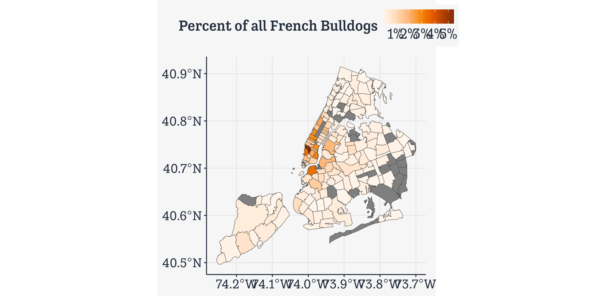
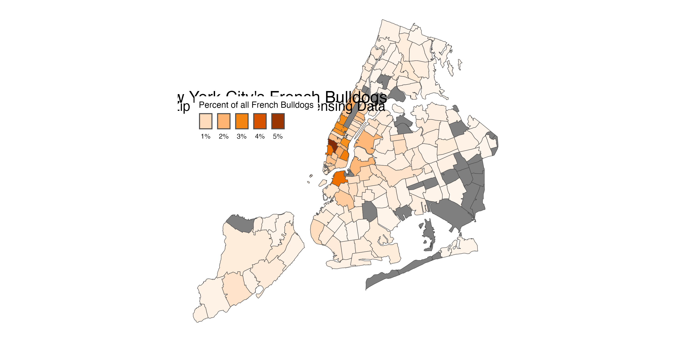
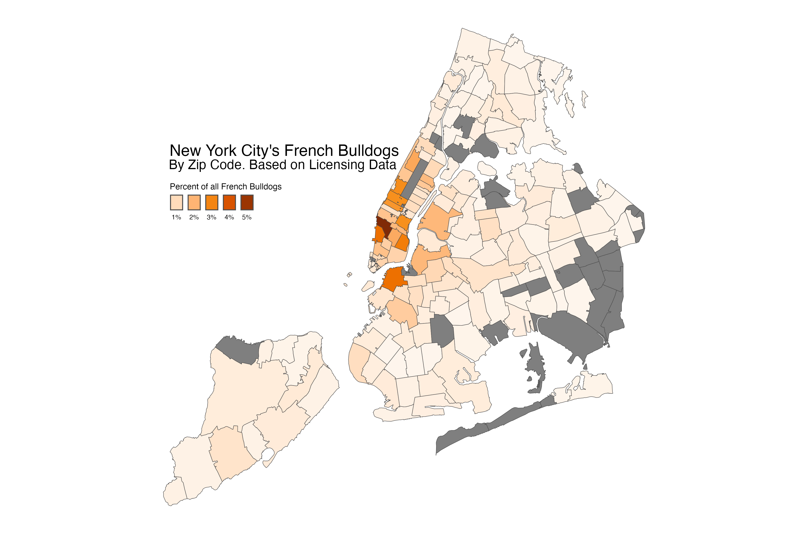

library(here) # manage file pathslibrary(socviz) # data and some useful functionslibrary(tidyverse) # your friend and minelibrary(maps) # Some basic mapslibrary(sf) # Simple Features Geometries and geom_sf()library(ggforce) # Useful enhancements to ggplot
Maps using Simple Features
geom_polygon() is limiting
It’s very useful to have the intuition that, when drawing maps, we’re just working with tables of x and y coordinates, and shapes represent quantities in our data, in a way that’s essentially the same as any other geom. This makes it worth getting comfortable with what geom_polygon() and coord_map() are doing. But the business of having very large map tables and manually specifying projections is inefficient.
In addition, sometimes our data really is properly spatial, at which point we need a more rigorous and consistent way of specifying those elements. There’s a whole world of Geodesic standards and methods devoted to specifying these things for GIS applications. R is not a dedicated GIS, but we can take advantage of these tools.
geom_polygon() is limiting
It’s very useful to have the intuition that, when drawing maps, we’re just working with tables of x and y coordinates, and shapes represent quantities in our data, in a way that’s essentially the same as any other geom. This makes it worth getting comfortable with what geom_polygon() and coord_map() are doing. But the business of having very large map tables and manually specifying projections is inefficient.
In addition, sometimes our data really is properly spatial, at which point we need a more rigorous and consistent way of specifying those elements. There’s a whole world of Geodesic standards and methods devoted to specifying these things for GIS applications. R is not a dedicated GIS, but we can take advantage of these tools.
Enter simple features, the sf package, and geom_sf()
The Simple Features package
When we load sf it creates a way to use several standard GIS concepts and tools, such as the GEOS library for computational geometry, the PROJ software that transforms spatial coordinates from one reference system to another, as in map projections, and the Simple Features standard for specifying the elements of spatial attributes.
library(sf)
Linking to GEOS 3.11.0, GDAL 3.5.3, PROJ 9.1.0; sf_use_s2() is TRUE
Let’s see the main upshot for us.
The nycdogs package
library(nycdogs)nyc_license
# A tibble: 493,072 × 9
animal_name animal_gender animal_birth_year breed_rc borough zip_code
<chr> <chr> <dbl> <chr> <chr> <int>
1 Paige F 2014 Pit Bull (or Mi… Manhat… 10035
2 Yogi M 2010 Boxer Bronx 10465
3 Ali M 2014 Basenji Manhat… 10013
4 Queen F 2013 Akita Crossbreed Manhat… 10013
5 Lola F 2009 Maltese Manhat… 10028
6 Ian M 2006 Unknown Manhat… 10013
7 Buddy M 2008 Unknown Manhat… 10025
8 Chewbacca F 2012 Labrador (or Cr… Manhat… 10013
9 Heidi-Bo F 2007 Dachshund Smoot… Brookl… 11215
10 Massimo M 2009 Bull Dog, French Brookl… 11201
# ℹ 493,062 more rows
# ℹ 3 more variables: license_issued_date <date>, license_expired_date <date>,
# extract_year <dbl>
The nycdogs package
The metadata tells you this is not a regular tibble.
nyc_zips
Simple feature collection with 262 features and 11 fields
Geometry type: POLYGON
Dimension: XY
Bounding box: xmin: -74.25576 ymin: 40.49584 xmax: -73.6996 ymax: 40.91517
Geodetic CRS: WGS 84
# A tibble: 262 × 12
objectid zip_code po_name state borough st_fips cty_fips bld_gpostal_code
<int> <int> <chr> <chr> <chr> <chr> <chr> <int>
1 1 11372 Jackson He… NY Queens 36 081 0
2 2 11004 Glen Oaks NY Queens 36 081 0
3 3 11040 New Hyde P… NY Queens 36 081 0
4 4 11426 Bellerose NY Queens 36 081 0
5 5 11365 Fresh Mead… NY Queens 36 081 0
6 6 11373 Elmhurst NY Queens 36 081 0
7 7 11001 Floral Park NY Queens 36 081 0
8 8 11375 Forest Hil… NY Queens 36 081 0
9 9 11427 Queens Vil… NY Queens 36 081 0
10 10 11374 Rego Park NY Queens 36 081 0
# ℹ 252 more rows
# ℹ 4 more variables: shape_leng <dbl>, shape_area <dbl>, x_id <chr>,
# geometry <POLYGON [°]>
The nycdogs package
nyc_zips |>select(objectid:borough)
Simple feature collection with 262 features and 5 fields
Geometry type: POLYGON
Dimension: XY
Bounding box: xmin: -74.25576 ymin: 40.49584 xmax: -73.6996 ymax: 40.91517
Geodetic CRS: WGS 84
# A tibble: 262 × 6
objectid zip_code po_name state borough geometry
<int> <int> <chr> <chr> <chr> <POLYGON [°]>
1 1 11372 Jackson Heights NY Queens ((-73.86942 40.74916, -73.89…
2 2 11004 Glen Oaks NY Queens ((-73.71068 40.75004, -73.70…
3 3 11040 New Hyde Park NY Queens ((-73.70098 40.7389, -73.703…
4 4 11426 Bellerose NY Queens ((-73.7227 40.75373, -73.722…
5 5 11365 Fresh Meadows NY Queens ((-73.81089 40.72717, -73.81…
6 6 11373 Elmhurst NY Queens ((-73.88722 40.72753, -73.88…
7 7 11001 Floral Park NY Queens ((-73.70098 40.7389, -73.699…
8 8 11375 Forest Hills NY Queens ((-73.85625 40.73672, -73.85…
9 9 11427 Queens Village NY Queens ((-73.74169 40.73682, -73.73…
10 10 11374 Rego Park NY Queens ((-73.86451 40.73407, -73.85…
# ℹ 252 more rows
The polygon column is a list of lat/lon points that, when joined, draw the outline of the zip code area. This is much more compact than a big table where every row is a single point.
Let’s make a summary table
nyc_license
# A tibble: 493,072 × 9
animal_name animal_gender animal_birth_year breed_rc borough zip_code
<chr> <chr> <dbl> <chr> <chr> <int>
1 Paige F 2014 Pit Bull (or Mi… Manhat… 10035
2 Yogi M 2010 Boxer Bronx 10465
3 Ali M 2014 Basenji Manhat… 10013
4 Queen F 2013 Akita Crossbreed Manhat… 10013
5 Lola F 2009 Maltese Manhat… 10028
6 Ian M 2006 Unknown Manhat… 10013
7 Buddy M 2008 Unknown Manhat… 10025
8 Chewbacca F 2012 Labrador (or Cr… Manhat… 10013
9 Heidi-Bo F 2007 Dachshund Smoot… Brookl… 11215
10 Massimo M 2009 Bull Dog, French Brookl… 11201
# ℹ 493,062 more rows
# ℹ 3 more variables: license_issued_date <date>, license_expired_date <date>,
# extract_year <dbl>
Let’s make a summary table
nyc_license |>filter(extract_year ==2018)
# A tibble: 117,371 × 9
animal_name animal_gender animal_birth_year breed_rc borough zip_code
<chr> <chr> <dbl> <chr> <chr> <int>
1 Ali M 2014 Basenji Manhat… 10013
2 Ian M 2006 Unknown Manhat… 10013
3 Chewbacca F 2012 Labrador (or Cr… Manhat… 10013
4 Lola F 2006 Miniature Pinsc… Manhat… 10022
5 Lucy F 2014 Dachshund Smoot… Brookl… 11215
6 June F 2010 Cavalier King C… Brookl… 11238
7 Apple M 2013 Havanese Manhat… 10025
8 Muneca F 2013 Beagle Brookl… 11232
9 Benson M 2010 Boxer Brookl… 11209
10 Bigs M 2004 Pit Bull (or Mi… Brookl… 11208
# ℹ 117,361 more rows
# ℹ 3 more variables: license_issued_date <date>, license_expired_date <date>,
# extract_year <dbl>
fb_map |>ggplot(mapping =aes(fill = freq)) +geom_sf(color ="gray30", size =0.1) +scale_fill_viridis_c(option ="A") +labs(fill ="Percent of All French Bulldogs")

First cut at a map
fb_map |>ggplot(mapping =aes(fill = freq)) +geom_sf(color ="gray30", size =0.1) +scale_fill_viridis_c(option ="A") +labs(fill ="Percent of All French Bulldogs") +annotate(geom ="text", x =-74.145+0.029, y =40.82-0.012, label ="New York City's French Bulldogs", size =6) +annotate(geom ="text", x =-74.1468+0.029, y =40.8075-0.012, label ="By Zip Code. Based on Licensing Data", size =5)

First cut at a map
fb_map |>ggplot(mapping =aes(fill = freq)) +geom_sf(color ="gray30", size =0.1) +scale_fill_viridis_c(option ="A") +labs(fill ="Percent of All French Bulldogs") +annotate(geom ="text", x =-74.145+0.029, y =40.82-0.012, label ="New York City's French Bulldogs", size =6) +annotate(geom ="text", x =-74.1468+0.029, y =40.8075-0.012, label ="By Zip Code. Based on Licensing Data", size =5) + kjhslides::kjh_theme_nymap() +guides(fill =guide_legend(title.position ="top", label.position ="bottom",keywidth =1, nrow =1))


Use a different palette
library(colorspace)fb_map |>ggplot(mapping =aes(fill = freq)) +geom_sf(color ="gray30", size =0.1) +scale_fill_continuous_sequential(palette ="Oranges",labels = scales::label_percent()) +labs(fill ="Percent of all French Bulldogs")

Use a different palette
fb_map |>ggplot(mapping =aes(fill = freq)) +geom_sf(color ="gray30", size =0.1) +scale_fill_continuous_sequential(palette ="Oranges",labels = scales::label_percent()) +labs(fill ="Percent of all French Bulldogs") +annotate(geom ="text", x =-74.145+0.029, y =40.82-0.012, label ="New York City's French Bulldogs", size =6) +annotate(geom ="text", x =-74.1468+0.029, y =40.7955, label ="By Zip Code. Based on Licensing Data", size =5) + kjhslides::kjh_theme_nymap() +guides(fill =guide_legend(title.position ="top", label.position ="bottom",keywidth =1, nrow =1))


Keep the Zero-count Zips
nyc_license |>filter(extract_year ==2018) |>group_by(breed_rc, zip_code) |>tally() |>ungroup() |>complete(zip_code, breed_rc, fill =list(n =0)) |># Regroup to get the right denominatorgroup_by(breed_rc) |>mutate(freq = n /sum(n)) |>filter(breed_rc =="French Bulldog") -> nyc_fb2fb_map2 <-left_join(nyc_zips, nyc_fb2, by ="zip_code")
fb_map2 |>ggplot(mapping =aes(fill = freq)) +geom_sf(color ="gray30", size =0.1) +scale_fill_continuous_sequential(palette ="Oranges", labels = scales::label_percent()) +labs(fill ="Percent of all French Bulldogs") +annotate(geom ="text", x =-74.145+0.029, y =40.82-0.012, label ="New York City's French Bulldogs", size =6) +annotate(geom ="text", x =-74.1468+0.029, y =40.7955, label ="By Zip Code. Based on Licensing Data", size =5) + kjhslides::kjh_theme_nymap() +guides(fill =guide_legend(title.position ="top", label.position ="bottom",keywidth =1, nrow =1))